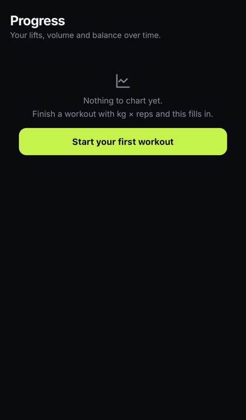
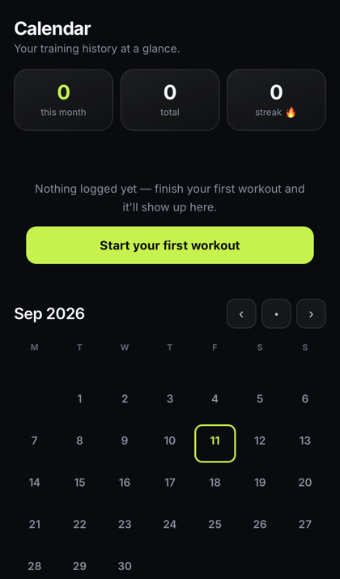

Gym Tracker — UX Audit
Heuristic evaluation of every screen · Nielsen 10 + mobile heuristics (WCAG / NN/g / Baymard)
390px viewport (iPhone/WebKit) · empty-first-run state · severity 0–4 × effort S/M/L
Executive summary
2 major (S3–4)
6 medium (S2–3)
5 minor (S1–2)
4 already strong
The app is not broken — it's inconsistent. The empty states (Progress, Calendar) and Today are genuinely clean. The "messy" feeling comes from three cross-cutting issues: (1) white-background exercise images glaring against the dark theme, (2) Profile crammed into one endless mega-card with no hierarchy, and (3) inconsistent card usage (some screens = one giant card, others = many). Fixing those three lifts the whole app.
⚡ Quick wins (high impact · low effort — do these first)
- Tint/mask the white exercise-image backgrounds to match the dark theme (Library, Today, exercise cards). Single biggest "clean-up" win.
- Give Profile an identity header (avatar + name + 2–3 key stats) instead of opening with a form.
- Replace "—" empty placeholders (Nutrition stats) with "Add weight →" — the dash reads as broken.
- Make the avatar picker its own tidy row, not hint-text wrapping beside the avatar.
👤Profile FOCUS · needs work
The main target. Everything is dumped into identical stacked cards with no hierarchy — it reads as a long settings form, not a profile.
📐 How Profile SHOULD look (benchmarked: Hevy · Strong · Whoop · Apple Fitness)
Every serious gym app treats Profile as identity + trophy case + account gateway — never a settings dump or a second dashboard. The vertical order is universal:
- 1 · Identity header — avatar + display name + "Edit profile" button. (You have the avatar; it needs to become a real hero.)
- 2 · 3-stat headline row — the near-universal trio: Workouts · Total volume · Streak. Biggest type on the screen. This is table stakes — every app has it.
- 3 · Achievements / PRs — preview 3–5 + "See all". Preview, don't inline the full table.
- 4 · Settings behind a gear or grouped-divided list — chunk into labeled sections: Account · Preferences · Integrations · Data & Privacy · About. One action per row + chevron.
- 5 · Data ownership visible — Export/Import + delete-account grouped at the bottom. Strong makes "export anytime" a headline feature; it reads as trustworthy.
Sources: ScreensDesign Hevy/Strong breakdowns · strong.app · NN/g "Tabs, Used Right" & "Dashboards".
S3 · MH4/H8No identity header — opens with a form
Every top fitness app (Hevy, Strong, Whoop) leads Profile with a hero: big avatar + name + headline stats. Ours opens straight into "Name / Sex / Birth year".
Fix: Identity hero at top — avatar, display name, and 2–3 stats (workouts, streak, current weight).
S3 · MH8One giant "About you" mega-card
Name, Sex, Birth year, Height, Weight all in a single tall card — monotonous, no grouping, hard to scan.
Fix: Group into compact iOS-Settings-style rows with chevrons; separate "Body" (height/weight) from "Identity" (name/sex/age).
S2 · SH4"Weight" row looks static but is interactive
It opens the weigh-in panel, but looks identical to the read-only Name/Height rows — inconsistent affordance.
Fix: Give tappable rows a chevron/disclosure; static inputs stay flat.
S2 · SAvatar picker feels bolted on
"Your avatar / Pick one below" hint text wraps awkwardly next to the avatar circle.
Fix: Avatar as part of the identity hero; picker opens on tap (sheet), not always-expanded.
🏋️Exercise Library 1 big issue
Structure is good (search, chips, 2-col grid) — but the white image backgrounds dominate and clash.
S3 · SH8/M6White image backgrounds fight the dark theme
Bright white rectangles on a near-black UI = harsh, "unfinished" feel. This is the #1 driver of "messy".
Fix: Tint the image area (subtle gradient/overlay), or blend the white to the card bg, or crop tighter so the figure fills more of the frame.
GOODSolid information scent
Muscle tag (lime) + "N Options" + section counts is genuinely useful and scannable.
S2 · SEmoji filter icons read as playful, not pro
Fix: Consider a consistent line-icon set for the muscle chips (keep emoji only if intentional brand tone).
📅Today strong
GOODClear hero + numbered exercise list
Good hierarchy, thumbnails, one obvious primary action. This is the model the other screens should follow.
S2 · SSame white-thumbnail clash
Fix: Apply the same image tint treatment as Library.
🥗Nutrition decent
S3 · SH1/H9"—" placeholders read as broken
Protein/day and Water show a bare em-dash when no bodyweight is set — looks like a bug, not an empty state.
Fix: Show "Add weight →" (link to Profile) in those tiles instead of "—".
S2 · MLong text blocks, low scannability
Fix: Principles/Example Day are wordy; tighten copy, add more whitespace between bullets.
GOODClear 3-stat card + honest "guidance not targets" framing.
📈Progress & 🗓Calendar clean empty states

Progress (empty)

Calendar (empty)
GOODTextbook empty states
Icon + plain-language message + one clear CTA ("Start your first workout"). Follows NN/g empty-state guidance well.
S2 · —Populated state not yet audited
Next: re-audit both with real workout data — charts, PR cards, and the calendar legend/dot colors are where density problems usually appear.
🏠Home recently compacted
GOODCompact layout A landed well
Header + Start + slim stat line + 2×2 mode grid + workouts. Workouts visible without scrolling.
S2 · SSame white-thumbnail clash on session rows
🧭Bottom navigation research finding
Not a screen, but a structural issue the competitor research surfaced.
S3 · MH4/M16 tabs is one over the comfortable ceiling
NN/g recommends 4–5 visible destinations in a bottom nav; 6 cramps labels and shrinks tap targets. And "Today" vs "Home" overlap — users get weak "information scent" telling them apart (a documented NN/g failure).
Fix: Merge "Today" + "Home" into one Home/Today tab → clean 5 tabs (Home · Calendar · Progress · Nutrition · Profile). Keep labels 1–2 words, title case (not ALL CAPS), lime only on the active tab.